Short Reports 2002
Green Mountain, 12/24/2002}
I’d wanted to hike up Green Mountain for years, but the opportunity always eluded me. Why not on Christmas Eve morning? I begged a few hours away from the home fires and made the drive, which took a full two hours from Woodinville. There was snow on the road for the last 2 miles, but I was able to drive without chains. Snow started immediately but the trail was well packed until making traverses on the first steep slope. The morning was beautiful, with blue sky over the snow covered meadows and soft yellow sunbeams through a band of cloud. The distance from town and the weather forecast of an impending storm made me worry about getting back down the road.
Indeed, the clouds got lower and lower. First Glacier Peak disappeared, then successively nearer peaks were truncated by gray, then covered completely. After the tarns, I snowshoed steeper slopes towards the highest point. Heavy snowfall, bitter wind and spindrift made the final steps uncomfortable for my frozen face! I stood on the concrete that marked the lookout for about 20 seconds to admire the view of whirling snow and gloomy valleys. Descent was uneventful, except for a “shortcut” that led me into a slide alder field. I soon realized my mistake and corrected my course. Good thing, because I was way off! My car had two inches of snow when I reached it at 12:50 pm, 4 1/2 hours after I started. Merry Christmas!
Little Si, 12/21/2002}
Kris and I hiked up her favorite trail. We got a very late start (3 pm) for the shortest day of the year, but we had headlamps ready for the trip down. But we were happy to reach the car just before full dark, the headlamps unused, unneeded, in the pack!
McClellan’s Butte, 12/14/2002}
Theron Welch and I got an early start for a half-day trip up this local conditioning peak. We had umbrellas against the steady rain, and enjoyed the pleasant walk up past various gravel roads. There was plenty to talk about, especially the little-known Gore Range in the Colorado Rockies. About halfway up, we encountered snow, which deepened quickly. Theron didn’t have gaiters, so on the few times I mercilessly put him in front to break trail, he got soaked. He invented a scheme of tied shoelaces which I nick-named “Piggly-Wiggly gaiters” after a well-known supermarket in the southeast. We got occasional cloud-breaks and less rain as we approached the summit. We were really surprised at the large amount of heavy, wet snow. At the summit ridge we prepared for the scramble, stepping out into a screaming wind. “Is this advisable?” I was ready to turn back when Theron found a better way at an impasse. One more crux move right along the knife-edge of the ridge got us past the difficulties to a sheltered area where we could rewarm hands (mine got numb going up and down). On the summit we saw the clouds part two or three times to a great wintry view of Mt. Kent. But before we could take a picture, a new cloud came screaming into place. We descended cautiously, then bounded down the trail easily. We ran into three parties, presumably grateful for our tracks ;-). A very small avalanche had obliterated a portion of the trail on the way down. Theron’s car had heated seats, a nice reward!
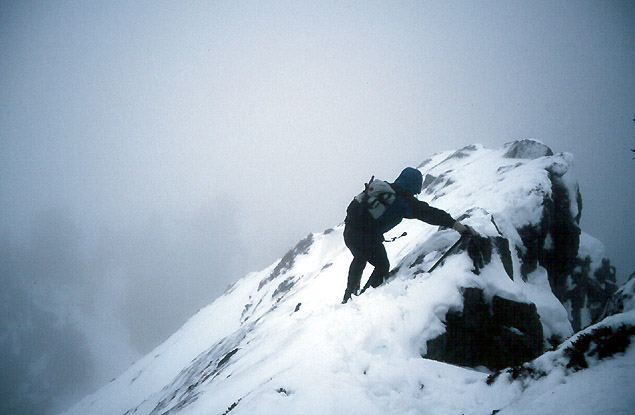
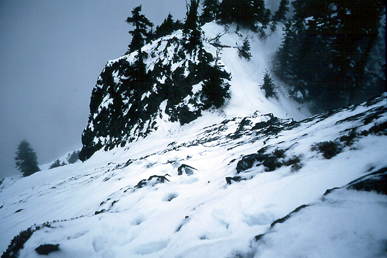
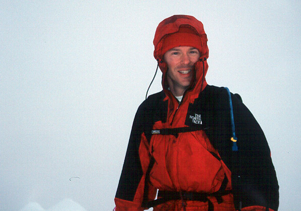
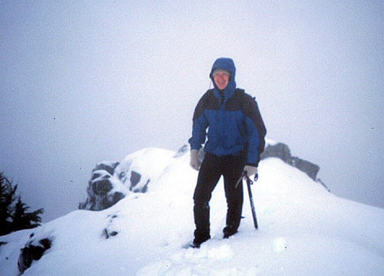
Mount Si, 11/26/2002}
Another morning trip in the great weather spell. Peter and I took the old trail up Mount Si. Due to the new Little Si trailhead, I got especially confused in the darkness of morning, lamenting that we were probably lost for the first 1500 feet of climbing (flashbacks to my trip here in July, and “Meth house” encounter at 1500 feet). But we did just fine, scrambling up the haystack and exploring other possible ascent routes. We hurried down to work, going a little too fast because Peter’s left knee started hurting. A great morning.
Exit 38 Climbing, 11/21/2002}
Alex, Peter and I went for a morning climb in the unusually good weather. First Alex led “Underground Economy (5.9).” I pink-pointed it (draws left in place), then Peter followed. Now we walked to “We Did Rock,” where Alex led “Blockhead (5.9)” and we followed it. I led “Sobriety (5.9),” having a nice fall because I got off route. This route was pretty tough! Peter and Alex top-roped it, Alex taking a blank-slab variation to the left. There was just enough time for me to lead “Blockhead”, then we had to go to work.
Index Climbing, 10/6/2002}
We wanted to play with our new video camera, so Peter, Kris and I climbed Great Northern Slab, and filmed it. We also pulled down the rope to a belay at the “Pisces” route, a 5.6 crack that goes right up to the same belay as G.N.S. What a great hand crack! Kris got the action on tape. Then we climbed the third pitch, filmed it, and rapped off. A good afternoon, but I got a bit ill after the Zeke’s burger on the way there.
Leavenworth Climbing, 10/5/2002}
Kris, Aidan and I drove out to L-town. Kris caught up on some sleep while Aidan and I went to the “Pearly Gates” crag. Aidan and I both led the first pitch of Cloud Nine (5.9), then I led “No Room for Squares” (5.8), and he led and I followed “Lost Souls” (5.9). These were all excellent climbs! Then we looked around the corner at some other ideas, and finally came back where I led “Celestial Grove (5.9+),” which had a very burly start, kind of a “highball” bouldering problem. Aidan followed on that, then we top-roped “Pearly Gates” (5.10c). Aidan successfully passed the roof, but I wasn’t able to. We went back to the car, and tried to go climb “Classic Crack”, but a teaching party had taken over the route (two belayers, etc.). So I led “Dogleg Crack” (5.8+), which was a nemesis of mine. Aidan came up, and then the three of us filmed some stuff with our camera. A great crack-climbing day, topped off by a visit to “Heidelburgers.”
![Michael on Celestial Grove}{topofit.jpg)
Exit 38, 9/24/2002}
Peter, Kim and I hiked up in the morning. Kris would have come but was eager to be home for delivery of a computer. We climbed “Just because you’re Paranoid… (5.8),” and “Lush (5.9).” Fun, juggy climbing on a nice morning with friends!
Exit 38, 9/??/2002}
Peter and I hiked up to Bob’s Wall after work. We’d never been there before, and were impressed. We climbed
- “Killer Bob (5.9),”
- “Peanut Brittle (5.8),”
- “A Castle So Crystal Clear (5.8),”
and attempted what might have been “Chainsaw Chalupa (5.8),” but it felt a lot harder than that. Lots of fun. But we had to hike out in the dark without headlamps. Really slow!
Index Climbing, 7/16/2002}
Jeff Smoot and I went to Index to get some pitches in before work. We climbed the first two “pitches” of Libra Crack (5.8). I felt kind of sketchy leading the second pitch, a reminder to go rock climbing more often! Then we connected to the fun 5.6 crack of Pisces. After rappelling down to the iron bolts, we had a great climb of Velvasheen (5.7, R). This was a really fun, kind of tricky climb. It was long too, finishing at the trees that mark the end of the third pitch of Great Northern Slab. From here, we hiked up a short steep trail to a small crag with two bolts. Jeff led this great 5.10a climb, placing a cam below a roof, then making a burly move to the first bolt. Short but fun! We made 4 rappels to the base, and drove to work. [On the way in, we nearly got a ticket for driving down a closed road, but Jeff did a great job of heading this off with a dumb n’ friendly attitude!]
Esmerelda Basin, Gallagher Lake, 7/6-7/2002}
Kris and I hiked up the basin and camped for the night at Fortune Pass. There is just a small snowfield to hike across near the end (almost level). An evening hike to look at Lake Ann, and a scramble to the 6500 ft. peak above the pass provided rewarding views of Chimney Rock and Mt. Daniels. As we prepared to leave in the morning, it started raining, but not enough to prevent us from hiking to Gallagher Lake and out on the Deroux trail. In light rain, we hiked down on many switchbacks to the jeep trail in the valley below Mt. Hawkins. Then we hiked up 500 feet to Gallagher Lake, which, along with adjoining meadows, was very pretty. I expected to see jubilant 4-wheelers shrieking and spinning out in the mud, but we had this whole stretch of trail to ourselves, possibly due to lingering snow. We hiked down to the pretty vale below the lake, and the sun came out as we hiked around a swath of avalanche debris that buried the trail. As we approached the car, day-hikers appeared. Once at the trailhead, I hiked up the road 1.5 miles to get the car at the Esmerelda Basin parking lot. A fun easy loop trip! Go soon, before the shrieking and the spinning out commence!
Bare Mountain, 7/5}
Yawn, work was very quiet. Can a pika escape for the afternoon? My paws trembled with anticipation as I drove the long, long road to Bare Mountain. Massive clearcuts and industrial forestland whizzed by. At 3 PM I reached the trailhead and scampered up a bouldery roadbed to a river crossing. There is a good log across the first half, then you hop three rocks to finish. I saw 6 people on this trail, but was happy to share it - it is incredible! I expected a Mount Sigh experience, but an incredible circ-mit-waterfalls and large steep meadows made it worth the drive. Hiking up many, many (55?) switchbacks I marveled at the exponentially expanding views of snowy ridgetops and green valleys. Near the summit I was glad for Mr. Ice Axe, as there was a steep snowfinger I needed to kick steps across. The exposure on this trail is exciting, but watch your step! From the summit I saw Tiny Seattle, Glacier Peak, and many other special friends. Chimney Rock looks especially forbidding from here. Nibbling on some stores from last fall, I began my descent, relaxing only after the snow was passed. My paws were a blur, and I grew dizzy on the switchbacks. I crossed the river and reached the car at 6:20 PM. It is 8 PM, I’m back in the office, nose twitching!
Mount Si, old trail, 7/4}
I had a few hours in the afternoon, so I went hiking. I’d heard of “the old trail” up Mount Si, but only knew that it started at the Little Si trailhead. Hiking up that trail, I took the 2nd right turn after it leveled out (I should have taken the third!). Unaware that I was on the wrong trail, I hiked up to some mossy boulders with bolts sticking out of the moss. “Crazy climbers”, I thought, but the next joke was on me as I was lured into deep and steep brush by dozens of flags and pieces of string tied along the trees. “BRH PRJ” said the flagging. 30 minutes later, I got back on the trail which dropped to a road. The road then climbed to a scary “Meth lab” looking house. I heard someone crashing around near the house, so I bushwhacked to the road higher up, not wishing to disturb someone(thing?). At least the road kept going up, albeit slowly. Eventually, I hit the old trail! Boy was I happy! I scurried up the steep switchbacks like a field mouse, cunningly reaching the main trail mere yards from the boulder-field. I scrabbled to the tip top summit, dodging falling rocks and bodies as Mr. Manning suggests. Mountains to the east were socked in and rainy. North Bend popped and fizzed through the afternoon, the celebrations getting underway. I ran down the trail, and nearly jumped out of my skin when I saw another person on it at 2000 ft! He had gotten disoriented, and his legs were tired and sore. Just to be safe, we stuck together until reaching the paved road. What a great trail it is, and forgiving of my routefinding errors!
Mt. Baring hiking, 5/30}
It was a really pretty day, and I had a few hours after work. I launched a foolhardy plan to climb Mt. Baring! From the trailhead, I hiked a few yards up the old road to a rugged trail beside a stream. After 30 minutes of pulling on rotten limbs, skating mossy rocks and climbing crumbling cliffs I left the stream and hiked a faint trail into the steep forest. When this was lost under snow, I continued straight up a wide gully to the ridge crest. That took long enough that I decided I should make this my high point. I hiked around for a while and tried to get views of Merchant and Gunn Peaks through the foliage. The trip down through the stream was most unpleasant!
Great Northern Slab, 5/??/2002}
Kris’s sister was in town for a few days, so we took her climbing on the slab. We climbed the usual three excellent pitches, and had a great time. She did so well for her first climb, always smiling!
Leavenworth climbing, 5/11-12/2002}
Kris and I climbed Midway, the classic route on Castle Rock. Then we went to the town Maifest for a while, and finished the day with an evening climb of good ol’ Mountaineer’s Buttress. The next morning I got up early to solo the “Tree Route” on Eight-mile Buttress. I roped up for the 3rd pitch, a 4-5 inch wide crack which I didn’t have any protection for anyway. There was a fourth pitch, but I had to get back. We had breakfast, then went on a leisurely hike (the Icicle Gorge Trail), but because we had to be on the other side of town for a horse ride, this became an epic! We took a loop trail, expecting it to be very short. But in the end, lots of running and worrying had to occur to get us to the horse ranch by 3 pm! Anyway, the horse ride was pretty awesome, we went up a steep trail with decent views. My horse tried to eat at every chance, and required stern discipline, which I believe he secretly craved. Going down was hell, with various muscles becoming really stiff. We had a great, full weekend together!
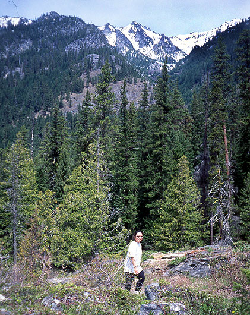
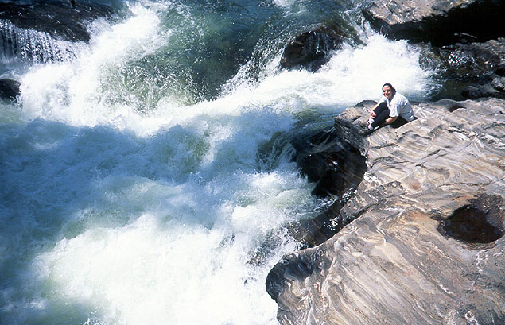
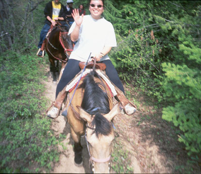
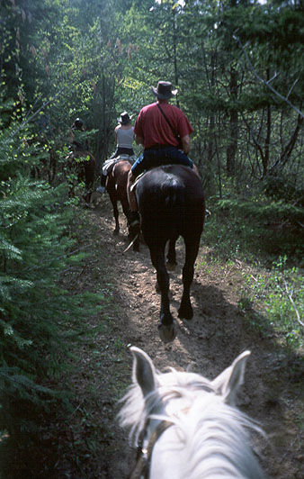
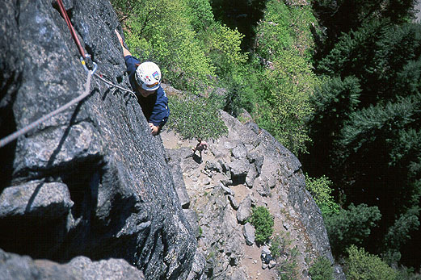
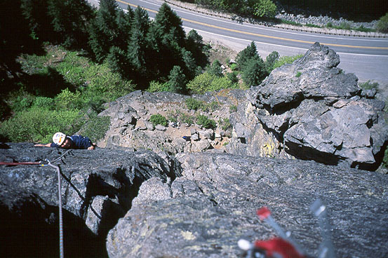
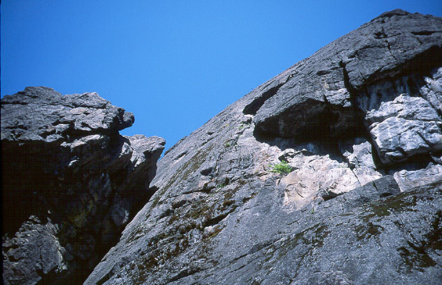
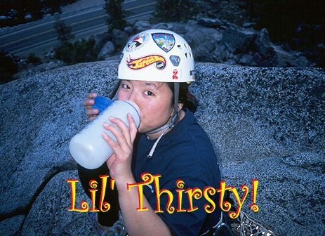
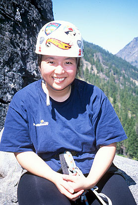
Mount Si, 5/4/2002}
Kris and I did some hiking to the 2.5 mile mark. I carried a heavy pack to train for a planned alpine climb the next day. But very wintry weather caused us to cancel this trip. Sniff.
Rattlesnake Ledge, 4/28/2002}
Kris and I hiked here in the late afternoon, enjoying the view from the top of the ledge. The hike is similar in difficulty to Little Si, but the views much more commanding! There is a 9.8 mile one way trip that traverses Rattlesnake Mountain, that would be fun to do sometime.
Leavenworth Climbing, 4/27/2002}
Peter and I intended to climb Orbit, but it was raining everywhere - even at Peshastin! So we climbed in the rain, and had quite an adventure. This was a fun hodge-podge kind of day, dodging or braving the rain - whatever it takes to keep climbing!
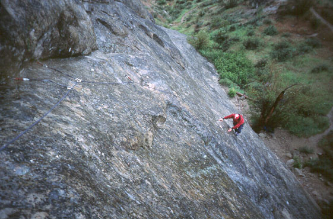
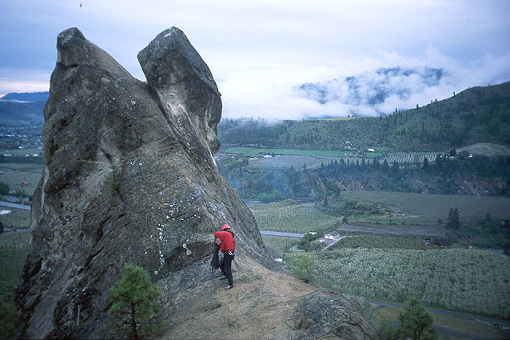
Mount Si, 4/19/2002}
Alex and I hiked to the plateau below the haystack before work. We looked at climbing lines on the Haystack. Despite early promise, the day had become gray and sullen.
Wallace Falls, 4/8/2002}
With the time change, it was still light after work! So I went to a new area for some exercise. I hiked to the upper falls and back, and I enjoyed the trail quite a bit. I’m surprised to have overlooked this nearby hike for so long. The trip was 1.5 hours round trip.
Exit 38, 4/7/2002}
Kris and I climbed a few pitches in the early evening. Fun!
Index Aiding, 4/2/2002}
Peter and I climbed Iron Horse to the anchors at “Ringing Flake.” Peter led up to the bulge, then came down and belayed me on the hook move. This was my first time to place a hook, and it was pretty exciting! The metal hook barely caught on a crystal in the granite and somehow held body weight. One millimeter to the right or left, one shift of my weight, and it would come off. I carefully eased onto it, thankful for the bomber nut placement at my knees. Oh yes, I was in the top steps of my aiders too - another first! I was pretty reluctant to climb up on the hook, imagining it pinging off the rock at any second, sending me on what I hoped would be a short fall. I felt for the first time what “hard aid” must be like. I became inclined to gallows humor, and repeatedly warned Peter that I was going to fall at any second. Scrabbling with my right hand, I found a pocket for my constant savior - the little yellow alien! Always a friend to me, he again proved his worth, fitting snugly in a pocket to the right of the hook. Moving onto the little cam felt like moving onto a two bolt belay station. Despite my nervousness, the hook never budged. Peter cleaned the pitch and said he would hang a truck off that hook placement. Well…it was scary to me! The climb finished with nutting similar to the start (described below). We rapped off and went to work.
Little Si, 3/??/2002}
Kris and I hiked to the summit on a moderately sunny day. I brought rope and rack to try out some climbs on World Wall I. But after clipping the first bolt of something, the wet and cold caused me to back off with frozen fingers!
Index Aiding, 3/24/2002}
I had a few hours to kill in the afternoon, so I went to Index and solo aid climbed part of the Iron Horse route. I missed the HB Offsets that Alex and I had last time we were here (two years ago?). But ordinary nuts worked pretty well too. I didn’t bring my hooks with me, and couldn’t find a way to get above the bulge at mid-pitch. I clipped a bomber nut above two fixed pitons and tried traversing to a crack on the right, but it was too far away. I didn’t see any other options, so I down aided to the pitons, then rappelled from there. I had to leave a ‘biner, but I’m sure someone took it by now!
Frenchman’s Coulee climbing, 3/17/2002}
Peter Chapman, Dan Smith and I drove out here in snow and hail, arriving to very cold weather, and colder rock! I led Party in Your Pants (5.8), blowing on my hands to keep from freezing. Then a nice fellow named Jack showed up, and while he and Dan climbed other stuff, Peter and I climbed the first pitch of Chopper Chicks in Zombie Town (5.8 first pitch). Peter led this, then I climbed a pitch above to the mesa top that climbed around a column, up a chimney, then up steep loose face holds. This route is just left of the 2nd pitch of Bill and Paul’s Bogus Adventure, and I’d also rate it 5.6, but very loose. Next, Peter and I top-roped Air Guitar, a great 5.10a crack. I managed to climb it without falling, so later I decided to lead it, but I was sufficiently tired to back off. Then I followed Peter on Crossing the Threshold (5.8). He led the crack climb in great style. I led Whipsaw (5.9), a pumpy bolted arete. After Peter followed this, we top-roped Pony Keg, a 5.10a crack climb just to the left. This was an excellent climb! Meanwhile, Dan finally got around to climbing 7 Virgins and a Mule, a great 5.7 chimney. It was a great time, many thanks to Dan for driving our sorry selves out there. Oh yeah, the weather was fine, sunny and hot in the afternoon!
Rampart Ridge, 2/9/2002}
Michael R., Aaron H., Joey L. and I drove to Mt. Rainier and snowshoed on the Rampart Ridge trail. It was the first time on snowshoes for these three guys, and I used my best whiny teacher’s voice to instruct them in the delicate art of snowshoe travel. We followed the gentle and mostly packed trail up to a viewpoint on the ridge, with great scenes of the Tatoosh and Rainier. I gave Michael my MSR snowshoes and used the enormous “Tubb’s” that he rented. These things were slipping and sliding all over. At the end, we sat in a snow covered meadow and talked about the mountain. Thanks for a great time, guys!
![Rampart Ridge Trail}{monridge.jpg) ![Following the trail}{joeywalk.jpg) ![Joey in a snowy meadow}{joemeadow.jpg) ![Michael R. in the meadow}{michmeadow.jpg)
Snow Creek Wall Recon, 2/3/2002}
![Chris Koziarz on Wedge Mountain}{chriswedge.jpg)
Chris Koziarz and I hiked up to the Snow Creek Wall, hoping to climb the Country Club Ramp. However, when we got a glimpse of the wall through the mist, it was pretty terrifying. We watched as avalanches scoured the upper ramp. The wall had so much snow, that even the steep rock of the Shield was white. Needless to say, we cached the technical gear, and took our snowshoes up the side of Wedge Mountain for some exercise. We avoided open slopes, and climbed in deep snow for a few thousand feet. We ate some lunch on an outcrop and looked down at the Wall. Much of the snow was melting, and it looked a lot better. Also, the sun came out to play. We headed back to the car and indulged in some “dry tooling” on Mountaineer’s Buttress. I led an easy pitch, hooking my ice tools onto ledges and into cracks. Chris led a pitch with some nice ice-tool-in-crack moves. We hiked down and made the long drive to the West.
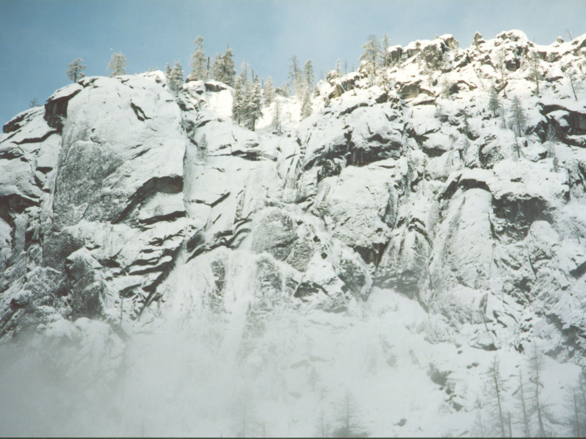
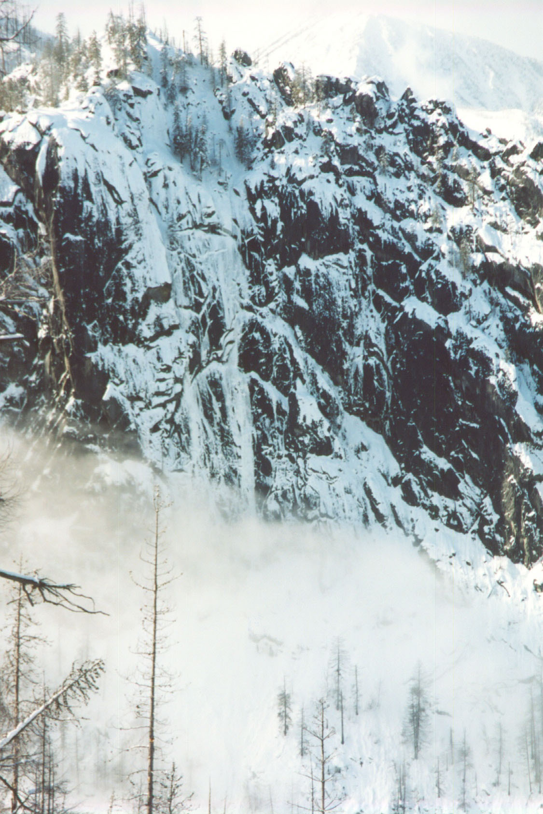
Ice Climbing, 1/29/2002}
Alex Krawarik and I hiked to a short ice climb near an Alpental ski run. It was incredibly cold. His hands froze about halfway up, and he lowered off two screws. Tried again - same thing! I was sure I could do it. I went up to the same point, and my hands froze! Horrible pain as they came back to life! Alex set up a top rope while I moaned and groaned. Alex top roped a really steep bit, and I did a somewhat easier finish to the anchor. Tough climbing and a cold day!
Nevada hiking, 1/20/2002}
I had a few hours on a family/business trip to Las Vegas, so I headed for the Mt. Charleston area. I figured to hike and probe the snow line, but couldn’t venture into it very far. I had tennis shoes, and a pair of Kris’s socks to serve as “gloves.” I followed the road until it traversed a north facing slope above the town of Mt. Charleston. Too snowy and icy. So I went back to the town and followed my nose up to a trailhead in a neighborhood. Hiking an old road, I soon entered the wilderness area, and began looking for something to do. A high peak on my right seemed attractive, but probably too hard. I kept walking until an obvious ridge led up on the right. It looked free of snow and just right for me. I left the trail and scrambled up the increasingly defined and narrow ridge. I detoured a steep step on the left, and had to cut steps up a frozen snowfield with a rock. Then a knife edge section proved very exciting. I didn’t think I should try anything harder than that! But the difficulty eased off, and soon I was on the summit - 2938 meters high. Looking to my right I saw I could connect to the first summit I saw, but it would require a rope. It looked similar to Peshastin Pinnacles climbing over there. A short rest on the summit, admiring the surrounding views, and I headed down. I wasn’t careful enough on the very rotten rock and have a few bruises to show for it. On one occasion, I fully weighted a hold with my foot and it suddenly exploded from the face like a bomb. I was able to avoid the knife edge ridge with a strange leaning chimney, and I skipped the lower ridge in favor of a 1000 foot scree ski, my shoes happily filling with pebbles. The peak I climbed is called the Cockscomb. I think it was about a 3 mile round trip, with 2000 feet elevation gain. I hiked from 2:00 pm to 4:20 pm, and the trip from Las Vegas took 45 minutes each way.
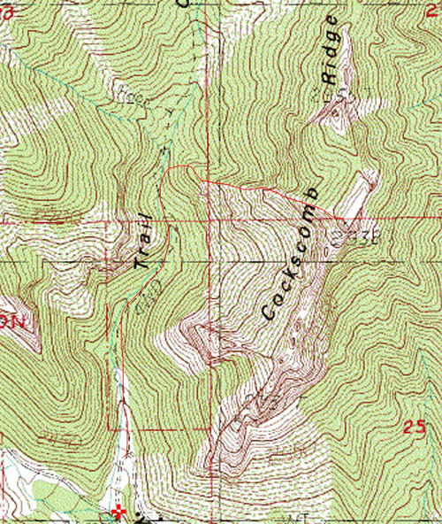